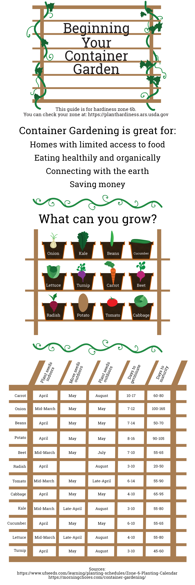

Emily Corley, Introduction to Digital Media, 7361, Summer 2019
The purpose of this website is to help you gain the knowledge of growing your own food. There are many reasons why you may want to do this, and their all your own. It can seems daunting to create a food garden living in the city, but it's possible! Trust me: I do it myself! This table will show you when to plant what. All of these vegetables and fruits will grow well in a container.
